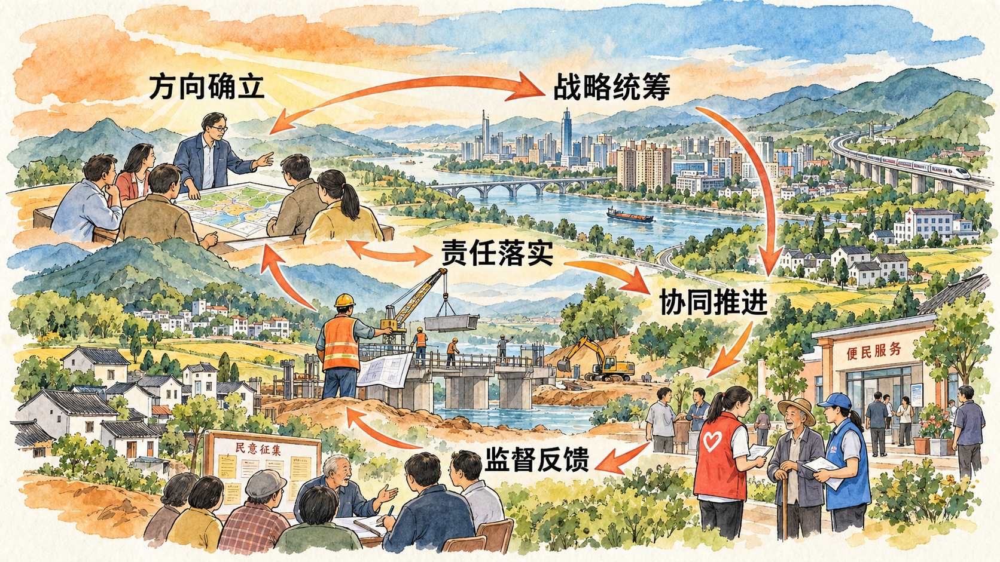

为什么同时讨论领导核心与理论指导
教材开篇指出：“坚强的领导核心和科学的理论指导是关乎党和国家前途命运、党和人民事业成败的根本性问题。”这句话同时提出政治领导与思想指引两个方面。理解二者关系，首先要准确把握它们各自的内涵。
教材在叙述党的十九届六中全会有关判断时写道：“党确立习近平同志党中央的核心、全党的核心地位，确立习近平新时代中国特色社会主义思想的指导地位，反映了全党全军全国各族人民共同心愿。”理解两个确立，需要联系教材所交代的历史过程。
科学理论关系到怎样认识形势、把握问题和确立方向，坚强领导核心关系到政治领导和事业发展的统筹。二者共同进入党和国家事业发展的实践，不能将其缩减为一般团队管理中的分工效率问题。
决定性意义为什么需要联系新时代实践
教材在阐述两个确立之后，继续叙述新时代事业发展的实践，说明其判断所依据的历史过程。这一组织方式提示我们，理解政治成果的意义，需要把基本判断同实践发展联系起来。
实践不是单个事件的集合。研究事业发展，需要认识不同领域之间的联系，也需要考察目标、部署与落实的过程。教材把战略性举措、变革性实践、突破性进展和标志性成果联系起来，帮助我们从整体上认识变化。
因此，学习这一部分，要把握教材从实践进入基本判断的论证顺序。对具体实践进一步研究时，也应使用能够说明相关过程的材料，不能以一个孤立事例替代整体历史依据。
怎样认识理论指导与实践探索的联系
理论指导需要在实践中发挥作用，实践探索又会提出需要继续认识的问题。只有把二者联系起来，才能理解教材为什么既强调理论的真理力量，也强调其在实践中的作用。
在认识层面，需要把握形势与任务；在行动层面，需要研究部署如何落实、各方面如何协同、问题怎样得到反馈。这样的分析帮助我们理解实践的展开过程，但有关历史地位和政治意义的基本判断，仍须依据教材准确把握。

从历史认识进入新征程要求
本节最后讨论新征程，说明领悟两个确立的意义不仅是理解已有历史，也涉及怎样面对未来任务与风险挑战。历史认识与实践要求由此联系起来。
教材明确提出增强“四个意识”、坚定“四个自信”、做到“两个维护”的要求。理解这些要求，需要把这些要求放在党和国家事业发展的整体中，认识共同方向、团结统一与持续行动的关系。
对于大学生，本节首先要求建立准确的概念认识和历史理解。进一步联系自身学习与社会实践，可以思考个人成长所依托的社会条件，以及怎样在具体行动中承担责任；这种联系用于深化认识，不替代教材的历史论证。